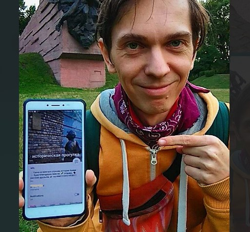
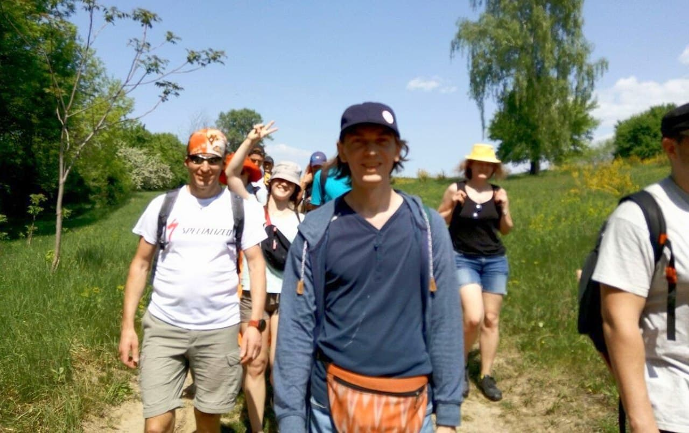
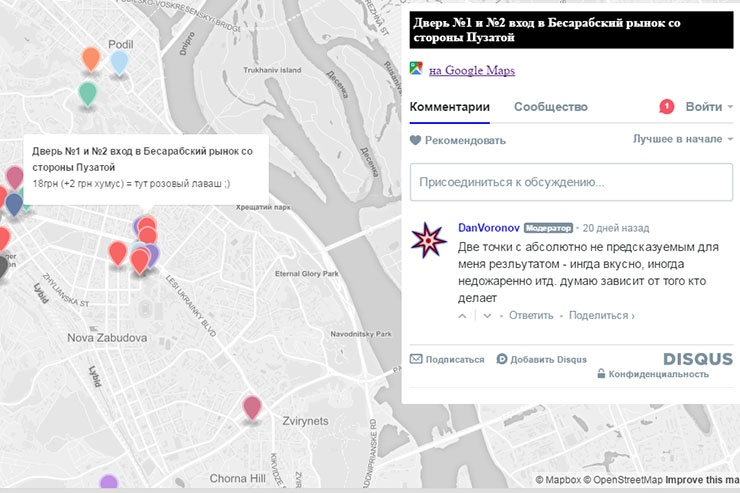
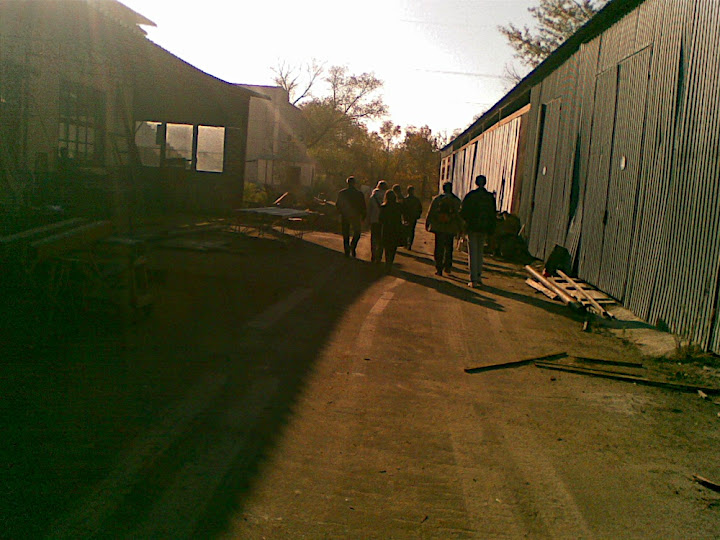
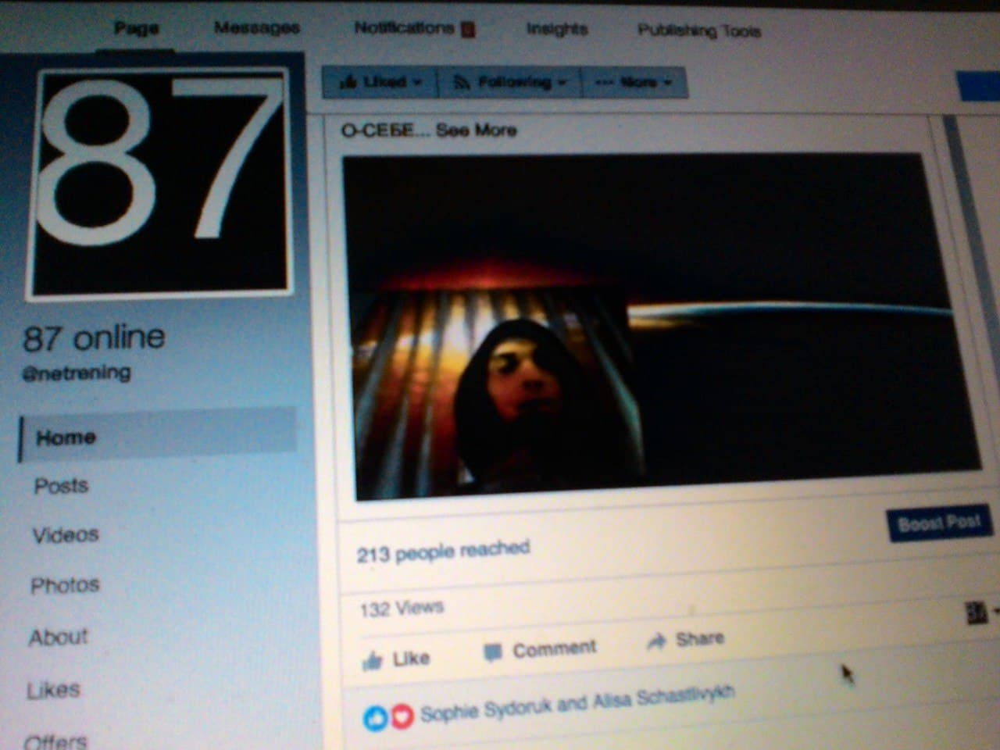
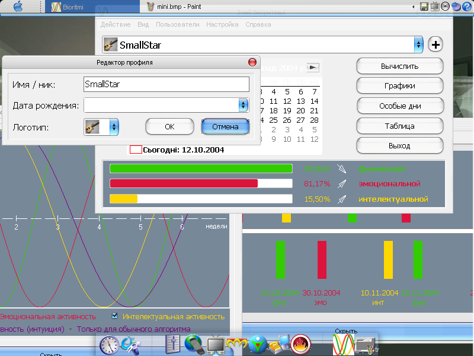

2019–25 These Telegram bots use live location to tell an immersive story as you walk.
The first tour covers the occupation of Kyiv and the Holocaust at Babiy Yar during World War II, with more than 40 stops along a 15 km route.
I started with Google Apps Script and later built a custom Node.js engine with a KML parser and a wrapper for POST requests to the Telegram Bot API.

hashtag #КИЕВнасквозь
2017–19 // 23-... I developed Through the City, a series of free, all-day urban hikes in Kyiv. We walk 35–44 km with people we’ve just met.
Official Telegram channel @kievpohod. The map shows the main stops and estimated times along the route.

2016–17 I explored Kyiv, tried falafel around the city, and mapped where to find it, with prices and a place to leave comments.
I ran a community for falafel lovers on VK and Facebook.
JS code. Mapbox API, Disqus comments, and GeoJSON data. Archived at /kievfalafel

2010–11 Open Saturday hikes through lesser-known parts of Kyiv. I started the hikes through a new “looking for a travel companion” section on VK.
I spoke about the importance of getting to know where you live and made a video from my Pecha Kucha presentation.
I built the /kievpohod website in WordPress, using Yandex Maps and Google Picasa photo albums.

2017-18 A weekly journaling project for personal growth in a private Facebook group.
I interviewed participants in person and online before they joined. I made a web app to organize the exercises, starting with a Trello board. I recorded video instructions and kept in touch with participants daily.
The promotional site and video are available in the archive.
2016–17. Kyiv, Kharkiv A program for working through personal challenges in relationships, using psychological techniques to explore emotions such as jealousy.
I created an in-person training program, an online journaling challenge with individual exercises in a Facebook group, and a support group for discussion.
Podcast interview: mixcloud.com
2017–18 An open educational project in Kyiv.
A difficult story. First, a group of far-right anti-LGBTQ activists attacked one of our lectures with tear gas (news). Then our Facebook page was hacked and stolen. Our brand was damaged (my article).
2010-11 I built an online career guidance tool based on my IAPM graduation research. I added a personality test to improve the recommendations. The tool also included a database of occupations.
I designed and built the tool from scratch using LAMP (MySQL and PHP), jQuery, jQuery UI, and the Google Charts API.
The tool used to be available at svoyodelo.com. See code on GitHub

2003–07 A Windows app that calculated biorhythm cycles from your date of birth. The method has no scientific basis.
I started the app as a personal learning project in Turbo Pascal 7.0 and later rewrote it in Delphi 5 and 7. In 2005, I translated it into English and tried selling it as shareware.
The Russian version at bioritmi.narod.ru was freeware.